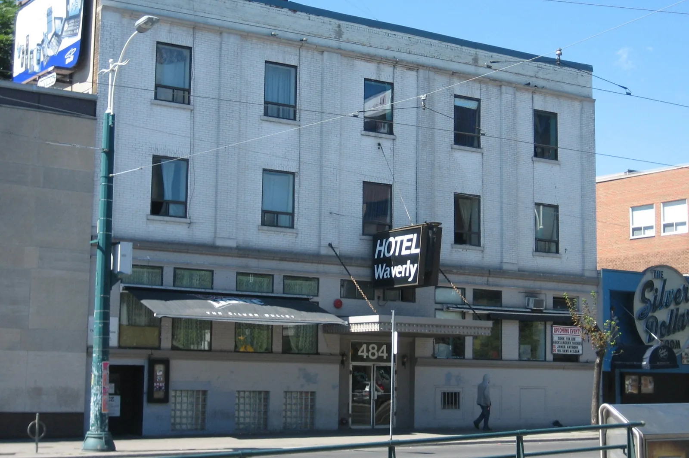

TORONTOOct 17, 2026
Eight Rooms, One Basement
In the spring of 2008 DJ Mag ranked the Guvernment eighth in the world, eight rooms at 132 Queens Quay East. That October NOW gave the dance-club vote to Wrongbar, 1279 Queen West, past the Dufferin tracks. The after-hours was still under the Silver Dollar. In April 2012 the company that ran the big room announced a tent in a park.
The photograph is a hotel in daylight. White brick, a blade sign that says Hotel Waverly, the number 484 over the door, a black awning for the Silver Dollar, and the round sign at the right edge of the frame. SimonP took it on 1 September 2007, at the corner of College and Spadina, a few months before the years this desk is counting. The night in that building was downstairs. Comfort Zone had been the basement after-hours since 1996, in the room Buzz left when Buzz went off to become Industry at King and Strachan. NOW, writing in 2020, names Dave Yarmus as the owner of the Silver Dollar and of the Zone. Through 2008, 2009, 2010, 2011 and 2012, the lineup on Spadina still formed for Saturday and for the long-weekend Sunday, and the hotel in the picture was still the thing you walked past to get downstairs.
Eighth, and ten places up
The other scale of those years was on the water. Charles Khabouth took the building at 132 Queens Quay East on 1 January 1996. Denise Benson’s history of the complex puts the size at 60,000 square feet, a space that had been Fresh and then RPM and the Warehouse, on a stretch of quay that was still factories and parking lots. The Guvernment opened that summer: a main room, the Acid Lounge, the Orange Room, The Drink, a roof, and the concert hall he would call Kool Haus. The licence at the start was 1,600. Over the renovations it more than tripled, and promoters renting the whole complex could put 5,000 people under the one roof.
In the 2008 Top 100 Clubs, DJ Mag had the Guvernment at number 8, ten places up, in a year Fabric was first. The blurb calls it a labyrinth of eight rooms and a roof with the downtown in it. Armin van Buuren, whom the same page calls the world’s number 1 DJ, is quoted twice. “If there’s one city that loves trance, it’s Toronto. And if there’s one club that knows how to rock, it’s the Guvernment.” Then: “I don’t know any other club that pulls those amounts of people all year long.” The names the magazine hangs on the main room besides trance are Carl Cox, Sasha, and Derrick Carter. Zark Fatah, later a co-owner of Maison Mercer, told Benson the plainer version. “Guvernment put Toronto on the map globally.”
Inside the complex, the rooms had their own clocks. Gallery opened Halloween 2005, red velvet and a gazelle head over the booth, with Steve Lawler the first night and Sydney Blu among the residents. Benson dates Gallery Saturdays as a house-and-techno draw from 2005 through 2008: Simon Jain, Carlo Lio, Evan G, the Activate promoters, Donald Glaude, Jesse Rose, Paco Osuna. Blu’s word for the sound is a dark, hard after-hours. Manzone & Strong, Joe Manzone and Fab Strong, had come up in The Drink from 2002 and held Gallery on Saturdays in the late part of the decade. In 2010 they moved to the main room as co-residents with Mark Oliver, the DJ Khabouth had hired to launch Spin Saturdays back at the beginning. The small room’s residents had been promoted into the room Armin was talking about.
Past the tracks
On 29 October 2008, NOW’s dance-club pick was a room that, in the paper’s own sentence, barely qualified next to Circa and the Guvernment. Wrongbar. The case was practical. Hear it there on a weeknight, or wait two months and hear it in a big room with everything that makes people decide they hate clubs. Footwork got a clause in the same item, as the post-rave basement still more devoted to dance music than a bar on Queen. Two years later, on 4 November 2010, NOW gave Wrongbar the category again and printed the address: 1279 Queen West, 416-516-8677. Circa, in that item, is already “now-defunct.” The Drake Underground, at 1150 Queen West, is the other name on the page.
Nav Sangha, who DJs as Nasty Nav, told the Globe and Mail he opened Wrongbar in 2007, just west of Queen and Brock, on the far side of the rail bridge at Dufferin. The inspiration he named was an earlier collision, indie rooms and DJ rooms sharing a pint at the Queenshead on a bad sound system. By August 2012, when the Globe profiled him opening a place east of the Don, Wrongbar had been through a 2010 hearing over a capacity increase, answered the complaints, and won the expansion. He had a line ready for the joke of gentrifying your own block. “I used to joke that I’m doing all this stuff so that I can be the dirty old man at the disco one day. I don’t want to get kicked out.”
The alley and the quay
Footwork was the other basement, and it was legal. Joel Smye and Stephan Philion opened it in May 2005 at 425 Adelaide West, in what had been the piano bar Cry Baby and, before that, The Matrix. The door was an unmarked alley on the south side. The windows onto Adelaide were boarded and turned into dancefloor. Capacity was 255, and Benson records that they rarely filled it in the first year. The crowd they had trained at 99 Sudbury arrived at 2 a.m. looking for a drink and had to be told the place had a licence. Addy Ranh brought a Friday weekly before the second year, Domestic, local DJs, a high ceiling he liked. Smye’s description of that Friday, given to Benson, is the city’s accent in one breath. “Its DJs played at places like The Guvernment and Comfort Zone, and had more of that pumping, hard-house vibe, which is also kind of a Toronto sound.”
The same people worked all three sizes. Deko-ze, a resident at Fly, the Guvernment, Comfort Zone, and later CODA, played Footwork’s last dance in October 2013 and told Benson the rooms the underground still named when it travelled: Industry, Boa, System Soundbar, Turbo, and Footwork. The list is a closing speech, spoken after the years in question, and it is a map of where a Toronto DJ of that period was expected to have stood. Smye said he and Philion had already wanted a next room as far back as three years before the close, which puts the itch around 2010. A condo went up beside the alley at the end. Through 2012 the door was still the alley.
A tent with the club’s name on it
On 23 April 2012, INK Entertainment, the company Khabouth built over the clubs, sent out a release. VELD Music Festival, Downsview Park, 4 and 5 August, two stages, all ages, a 19-and-over VIP for 3,000 people. Deadmau5 headlined the Saturday main stage, with Steve Angello, Knife Party, and Steve Aoki under him. Avicii headlined the Sunday, with Bassnectar and Nicky Romero. One of the two stages was called the Guvernment Tent. Mark Oliver, the Spin resident, was on that tent’s Sunday bill, next to Aly & Fila and Gareth Emery. The complex on the quay had been rented, for a weekend, to a former airfield, and the club’s name had become a tent.
That is the shape of Toronto from 2008 to 2012. A waterfront complex the trade press ranked eighth in the world. A bar at 1279 Queen West that the local paper preferred, twice, because the sound system was the point. A licensed basement for 255 on Adelaide, and an unlicensed-feeling basement that was in fact licensed, under a hotel at 484 Spadina, where the round sign in the photograph still says Silver Dollar. The same DJs moved between them. In the spring of the last year, the company that owned the eight rooms booked the headliners into a park and printed the club’s name on the canvas.
Sources
- DJ Mag, Guvernment, Top 100 Clubs 2008, number 8: https://djmag.com/top100clubs/2008/8/Guvernment
- Denise Benson, “Then & Now: The Guvernment complex,” Then and Now: Toronto Nightlife History: https://thenandnowtoronto.com/2015/03/now-guvernment-complex/
- NOW Magazine, “Dance club,” 29 October 2008: https://nowtoronto.com/music/dance-club/
- NOW Magazine, “Best dance club,” 4 November 2010: https://nowtoronto.com/music/best-dance-club/
- Globe and Mail, “Wrongbar club maven Nav Sangha makes a move eastward,” 10 August 2012: https://www.theglobeandmail.com/news/toronto/wrongbar-club-maven-nav-sangha-makes-a-move-eastward/article4475286/
- NOW Magazine, “The Comfort Zone re-emerges in Parkdale” (Tom Beedham, 3 March 2020): https://nowtoronto.com/music/comfort-zone-club-parkdale/
- Denise Benson, Footwork chapter, as published by THUMP, 21 July 2015: https://www.vice.com/en/article/then-now-toronto-nightlife-history-a-chapter-on-footwork/
- INK Entertainment, “VELD Music Festival 2012,” CNW, 23 April 2012: https://www.newswire.ca/news-releases/ink-entertainment-proudly-presents-veld-music-festival-2012-510075911.html